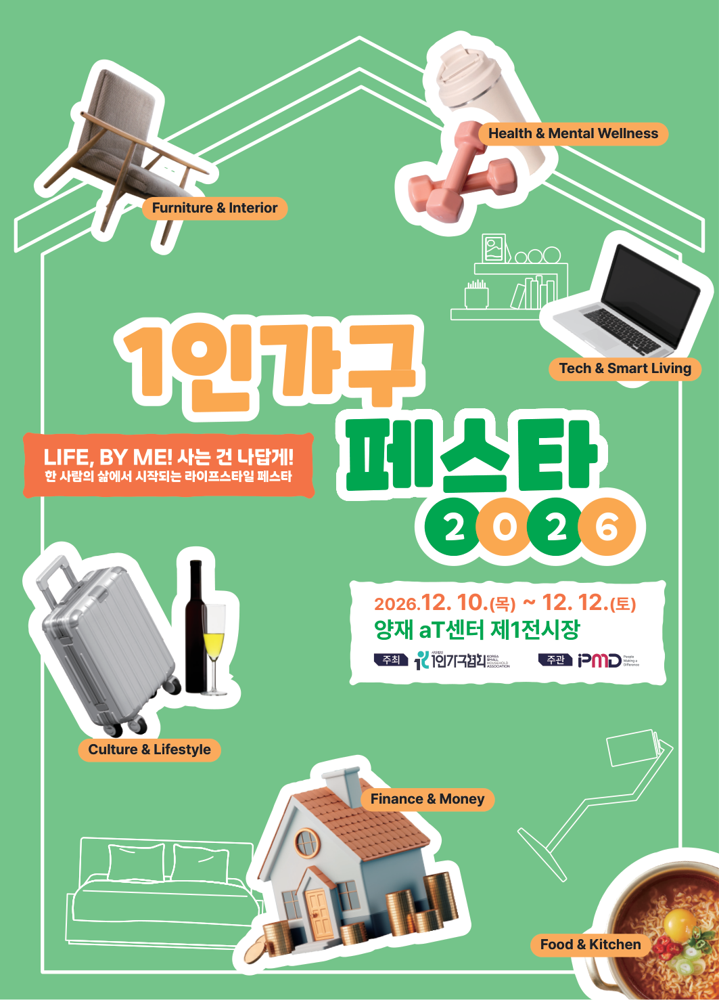

|
|
|
제13호 · 2026.09.07(월)
혼자 사는 삶을 위한
한 주의 정책·생활 소식
월간 정책브리핑 8월호 · 9월 특별세미나 안내 · 지난주 블로그 5편
|
|
안녕하세요, 1인가구협회 가족 여러분. 어느새 9월의 첫 주입니다. 길었던 여름 더위가 한풀 꺾이고 아침저녁으로 선선해지는 요즘, 환절기 건강 잘 챙기고 계신가요.
이번 KSA WEEKLY 제13호에서는 지난주 정책위원회가 펴낸 월간 정책브리핑 8월호「혼자 사는 사람을 위한 8월 정책 이야기」와 함께, 지난 한 주(8/24~8/28) 협회 블로그 이야기 5편, 다가오는 9월 특별세미나 「AI로 시작하는 업무 실전」(09/10 목, 09/17 목), 그리고 올 12월 협회가 여는 국내 최초 1인가구 종합 페스티벌 ‘2026 1인가구 페스타’(LIFE, BY ME!) 소식을 담았습니다.
이번 주 협회의 주거정책에 대한 방향성을 정리하여 블로그와 홈페이지에 올려두었습니다. ‘전세사기를 당하는 청년들을 돕는 일’도 중요하지만, ‘전세사기 방지’가 1인가구 주거정책의 전부가 되어서는 안 됩니다. 협회는 모두가 안심하고 주거권을 영위할 수 있도록 법령·제도를 정비하고, 사기당하지 않을 권리, 사기를 염려하지 않아도 되는 사회를 위해 1인가구 여러분과 함께 하겠습니다.
|
|
🔥 9월 특별세미나 ①회차 · 신청 접수 중
AI로 시작하는 업무 실전
흩어진 자료에서 보고서 한 장까지 — 2회 연속 과정 ①회차 (①·②회차 개별 수강 가능)
|
🗓 일시 2026. 9. 10(목) 저녁 7시~9시 (②회차 9/17(목) 동일 강사 연속 과정)
📍 장소 시립 문래청소년센터 4층 달촌 미디어실 (서울 영등포구 문래로 110, 2호선 문래역)
🎤 강사 차경훈 (업플래시 대표)
👥 대상 1인가구 누구나 — 실습형 (정원 24명 내외)
💰 참가비 회원 무료 / 비회원 30,000원
💻 준비물 개인 노트북 지참 (Claude Pro 등 유료 AI 요금제 권장)
📝 내용 양식이 제각각인 파일을 하나의 표로 정리 → 질문을 골라 결론 도출 → 차트 포함 보고서 1장 완성
|
신청 링크: https://forms.gle/SJyss9J4iTPGsGpH9 · 회원 무료 / 비회원 30,000원 · 문의 02-2635-9076
|
💡 다음 세미나 주제를 함께 정해요.
듣고 싶은 강연을 남겨주시면 다음 기획에 반영합니다. 로그인 없이 1분이면 충분해요.
|
|
|
🏛️ 협회 동향
성평등가족부에 1인가구 데이터 확충·제공을 건의했습니다
협회는 최근 성평등가족부 담당관과의 면담에서, 정책 수립의 토대가 되는 1인가구 관련 통계·데이터의 확충과 대외 제공 확대가 필요하다는 점을 전달했습니다. 담당관은 이에 대해 검토해 보겠다는 뜻을 밝혔습니다. 협회는 앞으로도 혼자 사는 사람들의 목소리가 정책 데이터에 반영되도록 지속적으로 건의해 나가겠습니다.
|
|
|
🎉 협회 대표 행사 예고 · 2026 1인가구 페스타
혼자 사는 삶이, 하나의 문화가 됩니다
LIFE, BY ME! 사는 건 나답게! · 12월 서울 양재 aT센터

국내 최초, 1인가구 시대를 대표하는 종합 라이프스타일·정책 통합형 페스티벌 ‘2026 1인가구 페스타(SOLO Living Festa)’가 12월 10일(목)~12일(토) 3일간, 서울 양재 aT센터 제1전시장에서 열립니다. 100개사 180부스 규모로, 금융·건강·스마트리빙·가구/인테리어·문화·식품 6개 분야 전시와 정책홍보특별관, 컨퍼런스·세미나·워크숍까지 — 청년(2030)부터 중장년(4050)·시니어(60+)까지 전 세대 1인가구를 위한 자리입니다. 후원(예정): 성평등가족부·보건복지부·서울시·경기도
💰 금융·자산❤️ 건강·멘탈💻 스마트리빙🛋️ 가구·인테리어🎨 문화·라이프🍱 식품·주방🏛️ 정책홍보특별관
⚠ 상세 관람 안내는 협회 홈페이지에서 · 참가기업(부스) 모집 문의 sololivingfesta@gmail.com · 02-2635-0207
|
|
|
노쇼 방지를 위한 세미나 운영 안내
🎁 강의 자료집·강의안 제공 — 정기 세미나에 참석하신 분들께만 강의 자료집과 강의안을 함께 드립니다.
🤝 참여 약속 안내 — 소중한 한 자리를 끝까지 함께해 주시는 문화를 위해, 참가비를 회원 무료 · 비회원 3만 원으로 운영합니다.
|
|
|
📑 협회 소식 · 월간 정책브리핑
월간 정책브리핑 8월호를 펴냈습니다
제2026-08호 「혼자 사는 사람을 위한 8월 정책 이야기 — 정부가 내놓은 고시원 규제, 혼자 사는 사람들의 연대가 되돌렸다」 · 1인가구협회 정책위원회 발행(2026-08-31)
혼자 사는 사람들의 반대로 주거정책이 재검토되기 시작했습니다. 국토교통부가 고시원 방마다 욕조를 놓을 수 있게 하려다가(8월 12일 예고), 1인가구협회의 반대(8월 14일)와 청년층 반발이 이어지자 8/21일 재검토를 시작했습니다. 당사자의 목소리가 실제로 중앙 정책을 되돌린 첫 사례입니다.
기록적 폭염으로 혼자 사는 어르신의 생명이 위협받자, 돌봄의 손길이 동네까지 닿기 시작했습니다. 온열질환 사망자가 2주 만에 8명에서 23명으로 늘자 정부가 비상 대응에 들어갔고, 복지부가 혼자 사는 어르신 약 27만 명의 안전을 챙겼습니다. 경상남도와 임실군도 뒤따라 독거 어르신을 직접 찾아 살폈습니다.
주거지원대책의 기준이 ‘가족’에서 ‘혼자여도 되는’ 쪽으로 바뀌기 시작했습니다. 8·13 부동산 대책이 ‘결혼하면 소득이 합쳐져 지원에서 탈락하던’ 기준을 없애 이제 한 사람 소득만 봅니다. 월세를 전세로 바꿔 부담을 낮춰 주는 새 사업(무주택 청년 500채 시범)도 나왔습니다. 다만 자세한 조건과 물량은 아직 정해지지 않았습니다.
|
|
|
지난주 블로그 다이제스트 · 8/31~9/4
01 일상돌봄 서비스, 혼자 아플 때 돌봄 공백 채운다
02 혼자 맞는 추석, '나홀로 추석'에서 함께 전 부쳐요
03 추석 연휴 문 여는 병원·약국 찾는 법
04 강남구 1인가구 커뮤니티센터 스테이.지 이용법
05 「서울 청년 주거안전망 컨퍼런스」에 부치는 1인가구협회의 시각
|
|
① 일상돌봄 서비스, 혼자 아플 때 돌봄 공백 채운다
질병·부상에 돌봄자 없는 청·중장년 1인가구에 돌봄·가사·병원동행 지원
블로그에서 전문 보기 ›
|
② 혼자 맞는 추석, '나홀로 추석'에서 함께 전 부쳐요
혼자 추석 보내는 1인가구를 위한 '나홀로 추석' 요리·교류 프로그램, 9월 6일까지 신청
블로그에서 전문 보기 ›
|
③ 추석 연휴 문 여는 병원·약국 찾는 법
추석 연휴 문 여는 병원은 E-Gen·'명절병원' 검색으로, 상비약은 미리 준비
블로그에서 전문 보기 ›
|
④ 강남구 1인가구 커뮤니티센터 스테이.지 이용법
강남 1인가구 거점 '스테이.지', 심리상담·소셜다이닝·소모임 무료 이용
블로그에서 전문 보기 ›
|
⑤ 「서울 청년 주거안전망 컨퍼런스」에 부치는 1인가구협회의 시각
전세사기 대응을 넘어, 1인가구 청년의 주거안전망으로 — 9월 2일 「서울 청년 주거안전망 컨퍼런스」를 계기로, 협회는 전세사기를 '피해 대응'이 아니라 1인가구 청년의 주거안전망 문제로 다시 놓습니다. 피해자 열에 넷은 입증책임의 벽에 막혀 인정조차 받지 못하고 그 다수가 혼자 사는 청년인 현실을 짚으며, 사후 수습·선의에 기대는 방식을 넘어 계약 전 위험정보 자동 확인, 입증책임 전환, 인정 여부와 무관한 긴급 주거·생계 안전망을 제안합니다. '선의가 아니라 구조로 안전한 사회'로의 전환을 촉구하는 협회의 정책 시각입니다.
블로그에서 전문 보기 ›
|
|
|
|
사단법인 1인가구협회 (Korea Small Household Association)
홈페이지 ksaofficial.co.kr · T. 02-2635-9076 · 본 메일은 협회 회원님께 발송되는 주간 소식지입니다.
※ 게재 정보는 발행 시점 기준이며 실제 일정·혜택은 변경될 수 있습니다.
문의하기 · info.ksaofficial@gmail.com
더 이상 소식을 받고 싶지 않으시면 수신거부 하실 수 있습니다.
|